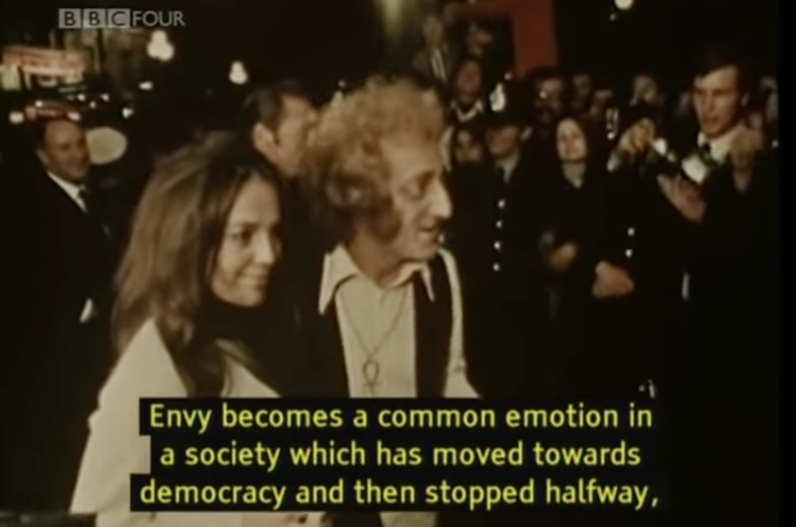
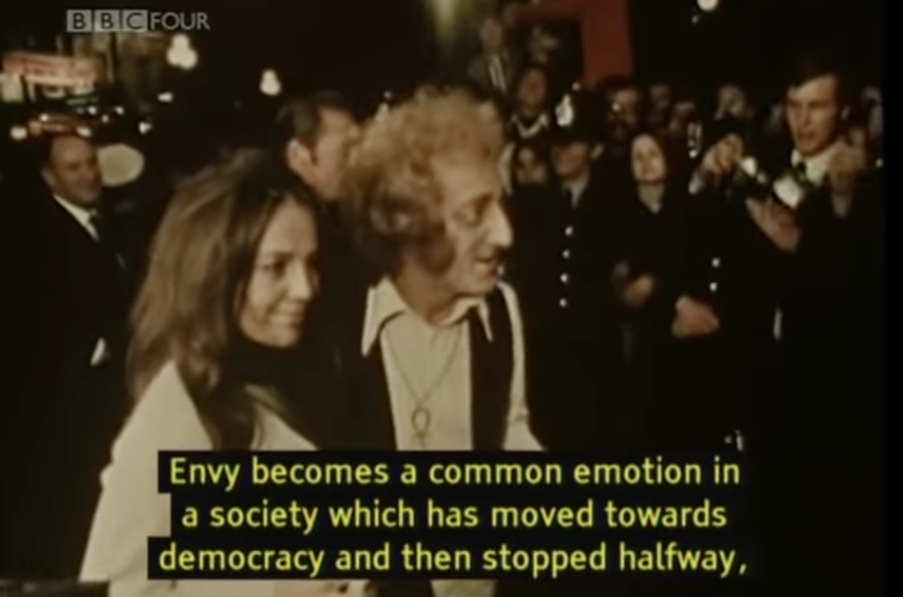
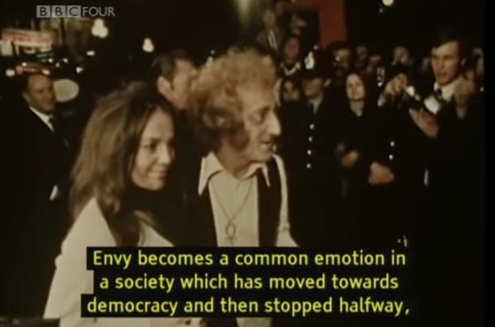
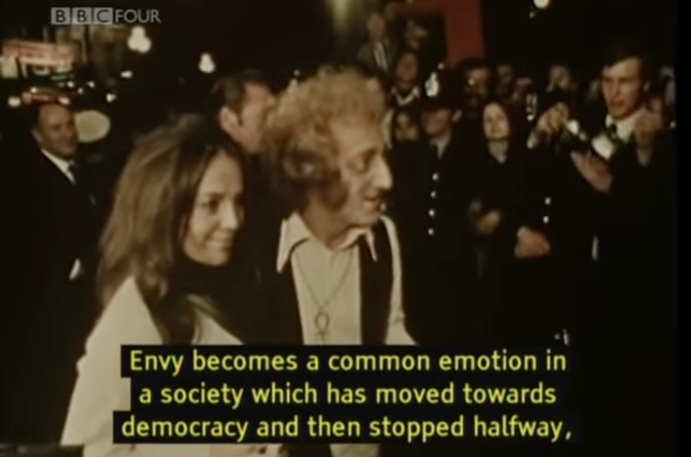

John Berger, makes great strides in connecting modern culture with the culture of renaissance oil-paintings in the docu-series, Ways of Seeing. He links many ideas of wealth, belonging, status and power to themes from the late Eighteenth century paintings. It is interesting to see how these ideals are still extremely relevant today, especially with the invention of social media. His realizations of the anxiety of money, as well as the juxtaposition that is imposed between publicity and realism, and the idea of belonging are so profound. Let’s explore my website to get a closer look at these themes together.